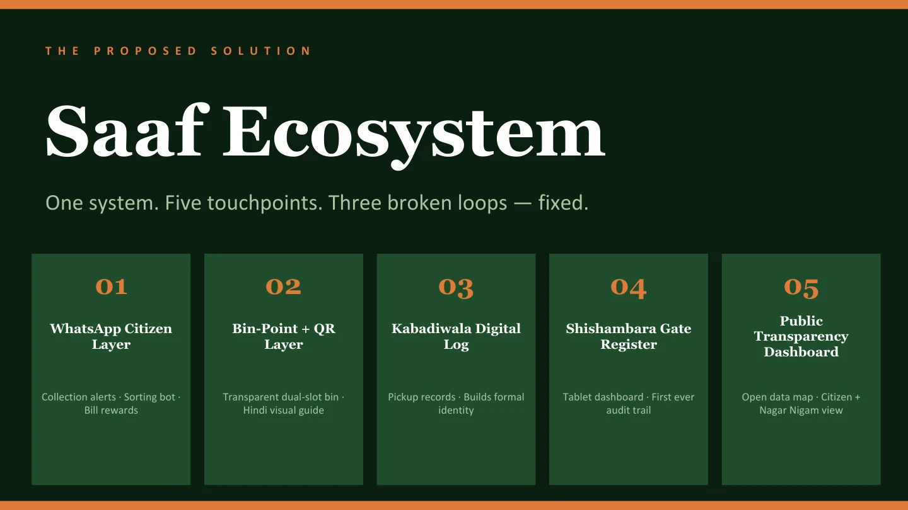
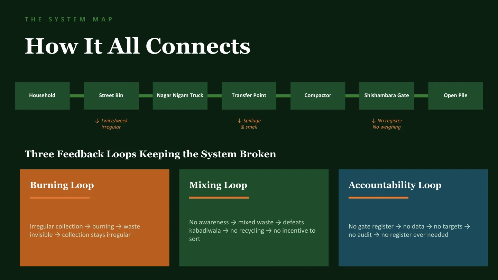
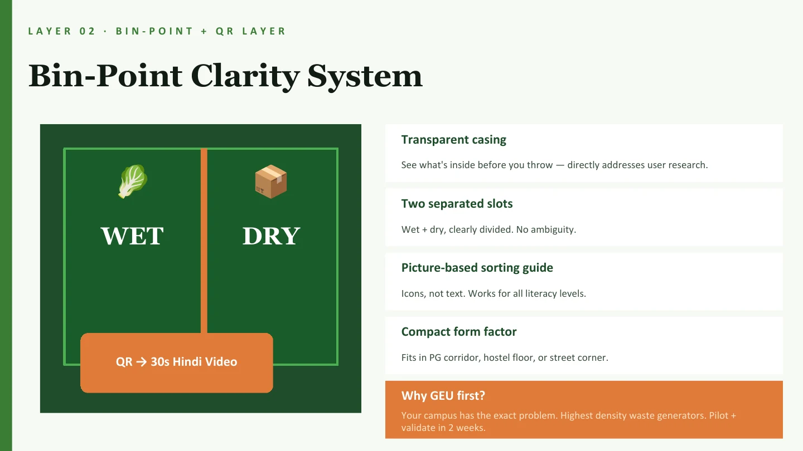

Citizens
Household habits, collection frequency, awareness, and incentives.
A team-led exploration of why Dehradun's waste journey breaks down—and how clearer touchpoints could connect citizens, workers, infrastructure, and accountability.

01 / The system problem
The project began with a simple question: if people, workers, vehicles, bins, and rules already exist, why does the system still produce mixed waste and weak accountability?
Our research suggested that responsibility was fragmented. Citizens lacked clear guidance, workers received mixed material, infrastructure did not support the intended behaviour, and tracking disappeared between handoffs.
02 / Team approach
As team lead, I helped keep the investigation aligned and brought the separate lines of enquiry into a shared system view and proposal.
Household habits, collection frequency, awareness, and incentives.
Bins, vehicles, handoff points, processing gaps, and the dumpsite.
Cleaning staff, informal workers, safety, identity, and traceability.
Enforcement, records, accountability, and what happens between touchpoints.

03 / The bottleneck
Across different conversations, people independently described a need for bins that made correct sorting easier to understand. That pointed the team toward the bin as a visible starting point—not a complete solution by itself.
“Make the correct action visible before the waste enters the system.”
04 / Concept direction
Collection alerts, sorting guidance, missed-pickup reporting, and a proposed reward view.
A transparent, picture-led separation point with a short bilingual guide.
A lightweight record of pickups intended to make informal work more traceable.
An offline-first concept for recording incoming vehicles and material at the dumpsite.
A proposed view of collection patterns and complaints for citizens and the local authority.

05 / Honest status
Saaf is an academic concept grounded in field research. The proposed layers have not yet been implemented at city scale, and several depend on institutional participation, operational ownership, and further validation.
A responsible next step would be a small campus pilot: one physical sorting point, one communication flow, clear measures, and direct feedback from the people expected to use and maintain it.
Led by Manasvi Wadhwa with Rishi, Vanshika, and Ananta.